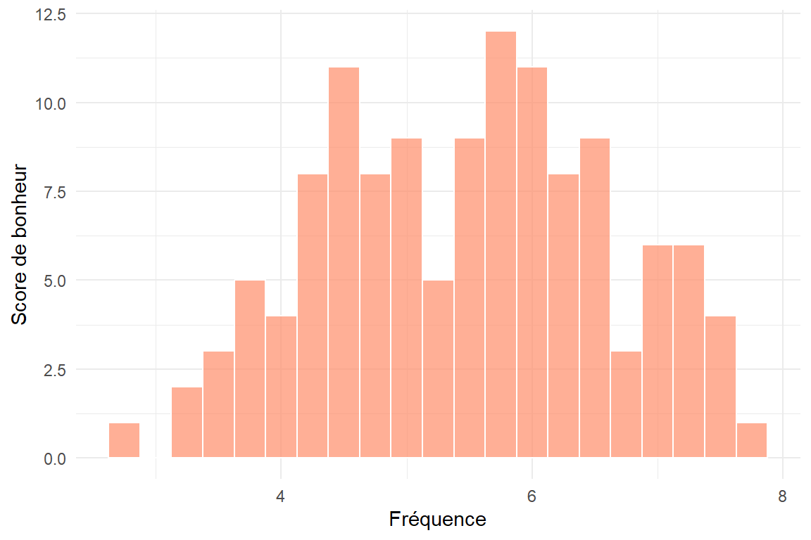
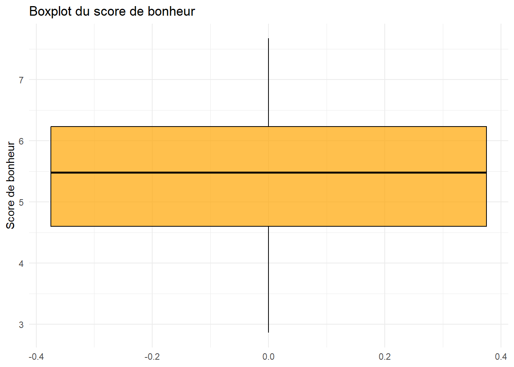

Depuis trop longtemps, l’indice de développement d’un pays a été calculé sur des indices économiques (capitalistes) : PIB, croissance, taux d’emploi, etc. Ce choix n’est pas neutre, il sert un système particulier qui ne met pas l’humain ou l’environnement au coeur de ses priorités. Nous voulons avec cette étude poser la première pierre d’une réflexion sur de meilleures méthodollogies d’évaluation du développement, axées sur le bonheur, mais aussi le respect de notre environnement, de la biodiversité, etc.
Plusieurs études existent qui traitent du bonheur des populations. Une des plus célèbres est le world happiness report. Nous avons voulu tenter de comprendre comme cet indice de bonheur est corrélé / constraint par différents facteurs socio-économiques. En particulier voir si le PIB et la croissance sont de bons indicateurs, remettre en cause le paradigme si ce n’est pas le cas.
Hypothèse : Le bonheur peut-il être prédit ou calculé, au moins en partie avec des données socio économiques ? Si oui, Lesquelles et à quel degré ? Y a-t-il des pays singuliers de part leur comportement sur ces données ? Peut-on tirer des différences en fonction des groupes de pays tels que l’OCDE, l’OPEP ou l’OTAN ?
Plan :
Récupération des données
Traitement des données
Statistiques descriptives
Comparaison de modèles
Conclusion statistiques
Cadre méthodologique
Le cadre méthodologique général est celui de la régression linéaire, avec une estimation des moindres carrés ordinaires. En fonction des données, des corrections éventuelles (white, MCG, etc.) pourront être envisagées. Pour chaque partie, une méthodologie plus précise sera discutée.
Analyse des données
Cadre des données
Nous avons tenté d’avoir le cadre le plus global possible. Ainsi nous étudions les pays du monde entier, en particulier les 147 référencés par le world happiness report. Après sélection de nos variables, il nous reste 125 pays à étudier.
Ayant des données allant de 1789 à 2024 et beaucoup de données manquantes, nous avons choisi de traiter les moyennes des données disponibles de 2013 à 2023. Certains jeux de données s’achèvent avant 2023, nous avons donc fait leurs moyennes jusqu’à la dernière année recensée. Cette décision a été motivée par notre envie de tirer des conclusions les plus larges possibles.
Code de la série
Définition
Unité
Source
Code
Le code du pays
Caractères
-
Political_Corruption
La moyenne de 2013 à 2023 d’un index de corruption politique allant de 0 à 1
La moyenne de 2013 à 2023 de l’indice du bonheur calculé par le World Happiness Index
Index allant de 0 à 10
https://www.worldhappiness.report/data-sharing/
Prétraitement et nettoyage des données
Pour éviter un maximum de données manquantes, nous avons effectuer des moyennes depuis 2013 et jusqu’à un maximum de 2023 sur toutes les données étudiées. Cela nous permet aussi d’atténuer les tendances qui ont pu se passer dans des temps plus courts sur cette décennie.
Nous avons sélectionné les jeux de données que nous avons trouvé nous paraissant les plus intéressant. Certains ont du être écartés du jeu de donnée final dû à un manque de donnée. En effet plusieurs pays n’étaient pas recensés dans les données et notre système de moyenne ne pouvait les ramener dans le jeu de donnée.
Analyse descriptive univariée des données
# import des donnéesdata =read.csv(file ='donnees.csv', row.names =2)[,-1] # pour enlever la colonne "numero"head(data)
On voit tout de suite, par comparaison de la moyenne et de la médiane de chaque variable certaines tendances : le PIB par habitant contient des individus qui tirent la moyenne vers le haut, idem pour la migration, le KWH par habitant et la densité de population.
En étudiant les minimums, maximums, étendues et écarts-type de ces quatre variables, on remarque qu’il ne s’agit probablement que de quelques individus dont les valeurs très fortes déforment les moyennes. Par exemple, la densité de population a une étendue de 7812, une médiane de 80 et un écart -type de seulement 65. On s’attend à observer dans ces variables des petits groupes d’individus aux valeurs très élevées.
Un effet inverse et de moindre importance peut aussi être constaté quand au surpoids des adultes. On voit que la moyenne est légèrement tirée vers le bas.
Les dépenses militaires ayant une moyenne légèrement plus élevée que la médiane et un écart-type faible malgré un maximum assez élevé, on s’attend à observer très peu d’individus avec des valeurs très élevées mais une concentration importante des individus autour de la médiane.
Le reste des variables ont l’air d’être peu dispersées. On peut s’atttendre à y voir une répartition normale des valeurs.
# histogramme de la variable cibleggplot(data, aes(x=Happiness)) +geom_histogram(binwidth=0.25, fill="blue", color="black", alpha=0.7) +labs(title="Histogramme du score de bonheur", x="Score de bonheur", y="Fréquence") +theme_minimal()

# boxplot de la variable cibleggplot(data, aes(y=Happiness)) +geom_boxplot(fill="orange", color="black", alpha=0.7) +labs(title="Boxplot du score de bonheur", y="Score de bonheur") +theme_minimal()

A première vue, l’histogramme nous indique que l’indice du bonheur semble difficilement suivre une loi normale. On repère cela à une certaine symétrie et une concentration d’indivus autour du centre, particulièrement deux pics : l’un proche de 4,5 et le second de 6.
Le boxplot du bonheur présente une répartition très équilibrée de notre variable explicative. On n’y repère pas de tendances particulières si ce n’est que les deux quarts les moins heureux sont légèrement plus grands.
Analyse de chaque variable explicative
plots <-list()for (i in1:ncol(data_numeric)) { p <-ggplot(data_numeric, aes_string(x=data_numeric[[i]])) +geom_histogram(binwidth=diff(range(data_numeric[[i]]))/30, fill="green", color="black", alpha=0.7) +labs(x=colnames(data_numeric)[i], y="") +theme_minimal() +theme(plot.margin = grid::unit(c(0.5,0.5,0.5,0.5), "cm")) plots[[i]] <- p}plots = plots[-11]library(gridExtra)# nombre de colonnes vouluncol_plot <-2#do.call(grid.arrange, c(plots, ncol = ncol_plot))
Au vu de la symétrie de leurs histogrammes on peut considérer que la croissance de la population, l’inscription à l’école primaire, les dépenses militaires et la migration peuvent suivre des lois normales.
La corruption politique, le surpoids et l’espérance de vie ne semblent pas suivre des lois classiques.
On remarque immédiatement les individus les plus aberrants qui referont surface dans les graphiques suivants et dont nous parlerons plus tard:
On repère dans l’histogramme de l’inscription à l’école primaire un individu atypique proche de 0, il s’agit de la Somalie avec moins de 9% d’inscrits.
De la même manière dans l’histogramme de la densité de population, on repère Singapour avec une densité titanesque de près de 8000 habitants au km2.
Dans l’histogramme de la migration, le Pakistan apparait tout à gauche avec plus d’1,5 million de migration nettte négative et les Etats-Unis tout à droite avec plus d’1,2 million de migration nette positive.
Le Luxembourg est l’individu tout à droite de l’histogramme du PIB par habitant.
Et le Qatar est l’individu tout à droite dans l’histogramme de la consommation énergétique.
Analyse descriptive bivariée des données
# Corrélations simples et affichage graphique (base R)vars <-names(data_numeric)[-ncol(data_numeric)]cors <-sapply(vars, function(v) cor(data_numeric$Happiness, data_numeric[[v]]))# trier par valeur (pour barplot horizontal)cors_sorted <-sort(cors)par(mar =c(5, 8, 4, 2))barplot(cors_sorted, horiz =TRUE, las =1,# gradient color from corcol = viridis::viridis(length(cors_sorted), alpha =0.8)[rank(cors_sorted)],xlab ="Corrélation avec happiness_moyenne",main ="Corrélations des variables explicatives")abline(v =0, lty =2, col ="grey40")
par(mar =c(5, 4, 4, 2) +0.1)
On remarque ici les variables les plus et les moins corrélées. L’espérance de vie, le PIB/hab, le surpoids et la consommation énergétique sont très corrélées positivement avec l’indice de bonheur tandis que la corruption politique et la croissance de population semblent elles être corrélées négativement.
Les autres variables ne semblent pas être corrélées drastiquement à l’indice de bonheur.
# Tracé des graphes de points et de la linéaritéscatter_plots <-list()for (i in2:11) { p <-ggplot(data, aes_string(x=data[[i]], y="Happiness")) +geom_point() +geom_smooth(method=lm , color="red", fill="#69b3a2", se=TRUE) +labs(x=colnames(data)[i], y="Happiness") +theme_minimal() scatter_plots[[i-1]] <- p}library(gridExtra)# nombre de colonnes vouluncol_plot <-3do.call(grid.arrange, c(scatter_plots, ncol = ncol_plot))
A nouveau, on retrouve les individus aberrants repérés plus tôt qui déforment complètement les graphiques sur l’inscription à l’école primaire, la densité de population et la migration nette. Il serait bon de voir la répartition de ces graphes sans ces individus.
Dans le graphe du surpoids par l’indice de bonheur, on repère comme dans l’histogramme du surpoids deux pics de surreprésentation.
La entre l’indice de bonheur et le PIB/hab semble logarithmique avec une concentation forte des individus vers les valeurs les plus faibles. De même pour le graphe de la consommation énergétique.
On doute de la linéarité entre l’indice de bonheur et la corruption politique car le nuage de point est très dispersé. De même pour la croissance de la population et les dépenses militaires.
Finalement, on remarque une certaine linéarité positive entre l’indice de bonheur et l’espérance de vie à la naissance, les points semblent bien décrire une droite.
# Corrélation entre les variables explicativeslibrary(corrplot)corrplot(cor(data_numeric[,-ncol(data_numeric)]), method="shade", type ="lower", tl.col="black", tl.srt=45)
On voit que certaines variables sont corrélées, source de problème pour notre régression à venir. En voici les plus importantes :
La corruption politique est corrélée négativement avec le PIB/hab, l’espérance de vie, le surpoids et la consommation énergétique.
Le PIB/hab est corrélée positivement avec l’espérance de vie, le surpoids et la consommation énergétique.
L’espérance de vie est corrélée positivement avec le surpoids et la consommation énergétique.
Le surpoids est corrélée positivement avec la consommation énergétique.
On a donc quatre variables qui semblent corrélées entre elles.
Analyse et discussion des résultats
Modélisation principale
# premier modèle : toutes les variables candidatesreg1 <-lm(Happiness ~ Political_Corruption + KWH_pp_pc + GDP_per_Capita + Lifespan + Net_Migration + Overweight_Adults + Population_Density + Military_Expenses + Population_Growth + OCDE + Primary_School_Enrollment, data = data)cat('\n--- Résumé du modèle (reg1) ---\n')
De prime abord, on constate d’après le test de Fisher, que notre modèle explique plus de 80% de la variance de l’indice duebonheur. Nos variables significatives, par ordre de significativité, sont l’espérance de vie, le surpoids, le PIB par habitant, la dépense militaire, la participation à l’OCDE et l’inscription à l’école primaire.
# VIF pour contrôler la multicolinéaritélibrary(car)print(vif(reg1))